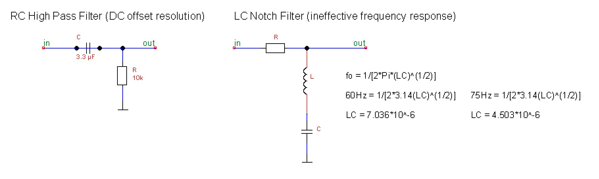

Analog Amplification with Instrumentation Amplifiers

High Pass Filters and DC Offset
DC Offset is an offset of a signal from the zero point. In audio recording, DC offset is a result of recording sound-- it occurs in the recording of the sound. Similarly, in our acquiring other signals, due to imperfections in the acquistion method (impedences, poor connections, interferences, ect.) there may be DC biases. The most undesirable aspect is clipping in the high voltage amplitudes. It is important in analog to remove the DC offset before large amplification, as the offset will also be amplified. In analog, a high pass filter can be used to remove the DC offset. A high pass filters allows only signals with a frequency higher than the cutoff point to be passed. The RC filter may be used despite the high amount of attenuation because this has little relevance when resolving DC offset issues. The RC high pass design used consists of a capacitor with a resistor to ground. The RC values are calculated by f = 1/( 2 pi RC). In digital processing, the DC offset can be removed by subtracting the mean amplitude from each sample.
Power Line Interference
Interferes with acquired EEG signals by generating unwanted analog signals that override or compete with them. It originates from the utility company equipment, and usually caused by a spark or arcing across some power-line related hardware. A breakdown and ionization of air occurs, and current flows between two conductors in a gap. The gap may be caused by broken, improperly installed, or loose hardware. Power-lines carry 60 Hz AC, so noise is located around 60 Hz. This can be eliminated using analog filters. Because the desired EEG signals do not exceed 40Hz, a low-pass filter can be used to preserve the EEG signals and eliminate the unwanted 60 Hz power-line interference.
Low Pass Filters (Active Butterworth)
Designed to allow a range of frequencies below a targeted frequency to pass, and those above that frequency cut off.Frequency response relies on filter design, which have different benefits, but no frequency response is perfect.
Active Filters
Uses an amplifier of some kind-- typically OPAMP. Prevents load impedance of previous stage affecting filter. Can increase precision by increasing number of poles without the need for expensive inductors. Designs used in low pass filters to decrease attenuation of filter.
Butterworth
The butterworth design is the maximally flat amplitude response, and attenuation is reduced by increasing the number of poles, which involves new calculations for component values and linking multiple stages together. Passive butterworth designs exist and may be a good selection for higher, more spaced out frequencies, but are a poor choice for low, close frequencies. The RC value is determined by 1/(2 pi f), and a separate R value for the voltage dividing resistor that is calculated by (K-1)R, where K is the given value for each stage of each nth-pole design. Little information is available regarding the K-valus for Butterworth filters passed the 8th order, making designs for 10th+ order filters difficult.